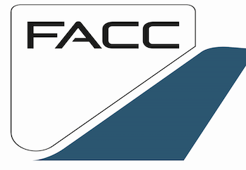

Case study
Case study
Case study

Case study
Specialising in safety, reliability, probabilistic analysis across a wide range of industries.
Expertise covers both deterministic and probabilistic analysis—measuring risk based on known physical limits, environmental conditions, or historical data.
Client needs vary significantly. Some projects are driven by cost and time constraints, while others prioritise a deeper understanding of performance and design success.
Insights from past projects are applied to deliver tailored, high-impact solutions, ensuring the best possible outcomes.
Experience in the aerospace sector includes collaborating with industry leaders such as Rolls-Royce Aerospace, Marenco Swisshelicopter AG, and MTU Aero Engines. Specialising in safety and reliability analysis, tasks undertaken include assessing complex systems such as the TP400 Engine Protection & Monitoring Unit for military aircraft and Lean Burn technology for Rolls-Royce engines. Proven methodologies like Failure Modes & Effects Analysis (FMEA), Weibull Analysis, and Monte Carlo simulations have been employed to predict failure rates and enhance system safety. Additionally, composite material reliability for FACC AG components has been addressed, ensuring compliance with rigorous standards like EASA (European Aviation Safety Agency) for airworthiness. These services help ensure high reliability and cost-efficiency, making them a valuable investment for any aerospace organisation.
In the marine sector, successful collaborations have included projects for Hagenuk Marinekommunikation and Raytheon Anschütz. Focused on Integrated Logistics Support (ILS), Reliability Block Diagrams (RBD), and Obsolescence Management, key tasks have included providing Failure Modes & Effects Analysis (FMEA) for advanced gear systems used in wave energy recovery. These solutions ensure systems are not only reliable but optimised for long-term performance at the lowest possible lifecycle cost. The ability to apply industry-leading methodologies guarantees that marine systems remain operational with minimal downtime, translating directly to reduced maintenance costs and improved safety.
Skills in reliability analysis and risk assessment can be applied to the finance sector to address risks associated with financial products and operations. Tasks undertaken to date include probabilistic analysis to provide clear insights into financial risk management. By applying these methods, organisations in the finance industry can make more informed decisions, minimise risk exposure, and boost confidence in their financial products and strategies. <
Involvement in projects such as Quiet Revolution Ltd’s vertical axis wind turbine (QR5) development highlights the ability to enhance the performance and reliability of green energy systems. Tasks undertaken involved mechanical and electronic reliability assessments and compliance with MIL-HDBK 217 standards, ensuring that renewable energy products perform efficiently in urban environments. By improving reliability, these services help optimise energy production, lower maintenance costs, and increase system longevity. This focus on reliability and sustainability is vital for advancing green energy technologies and offering cost-effective solutions to meet increasing global energy demands.
The experience working with Mallinckrodt Pharmaceuticals on the SOLAS Photopheresis treatment equipment highlights the importance of reliability in the health care industry. Tasks undertaken, such as developing a comprehensive reliability plan and ensuring compliance with FDA regulations, EU Medical Device Regulation (EU MDR), and IEC 60601-1:2024 standards, are essential for designing safe, high-performance medical equipment. This kind of reliability analysis helps reduce the risk of equipment failure, ensuring that the equipment performs as intended throughout its lifecycle. For health care providers, ensuring the safety and reliability of their equipment is paramount, and these services ensure minimal downtime and maximum performance, benefiting both healthcare providers and patients.
Experience with ALSTOM Transport has involved facilitating the implementation of RAMS (Reliability, Availability, Maintainability, Safety) processes in alignment with EN 50126, IEC 60812, and IEC 61508 standards. Key tasks included ensuring that rail systems not only meet technical specifications but also benefit from reduced lifecycle costs through optimised maintenance strategies. The ability to improve long-term reliability and availability while managing costs is crucial in the rail industry, where equipment uptime and cost-efficient operations are critical to maintaining schedules and minimising delays. These reliability-focused services contribute directly to operational efficiency and cost savings, making them indispensable to any rail operator.
If you find my work valuable, consider supporting me on Patreon.